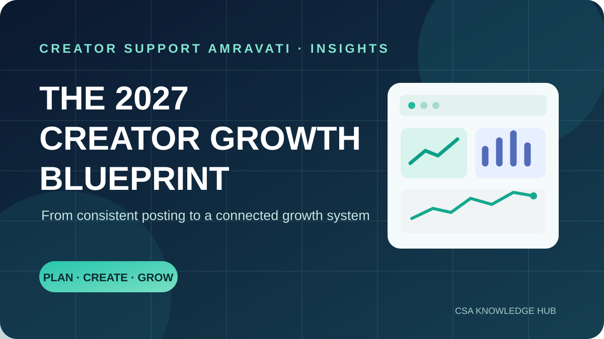
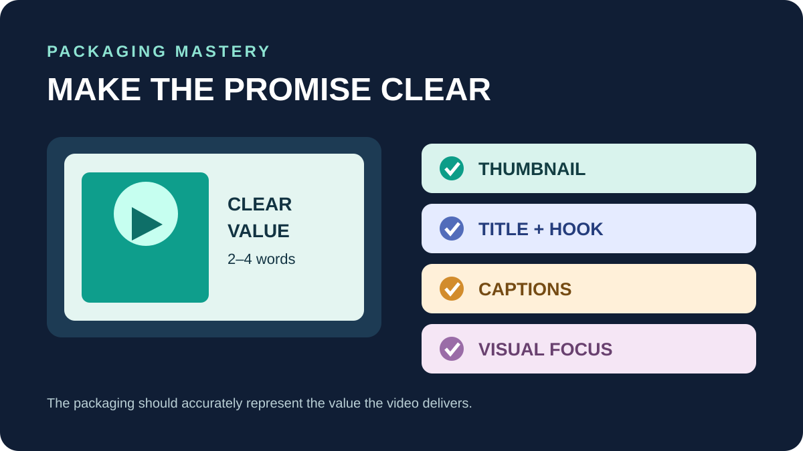
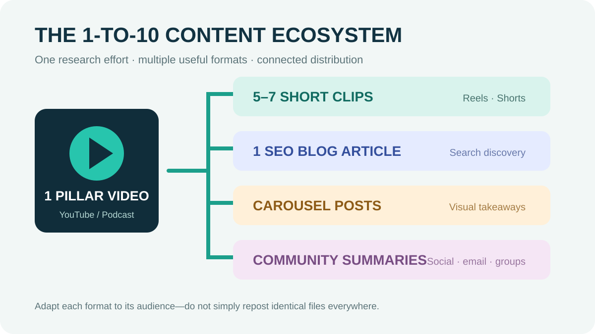

2027 Ke Liye Tayyari: Sirf Content Dalne Se Views Nahi Aayenge — Indian Creators Aur Businesses Ka Complete Growth Blueprint
Aaj India ke har tier-1, tier-2 aur tier-3 shehar mein educators, coaches, doctors, business owners aur creators videos bana rahe hain. Smartphone cameras behtar hue hain, internet affordable hai aur AI tools widely available hain. Phir bhi regular posting ke bawajood views aur business leads ka consistent result milna kai logon ke liye challenge bana hua hai.
2027 ke liye sirf posting frequency par depend karna kaafi nahi hoga. Creators aur brands ko audience retention, strategic packaging aur multi-platform distribution par ek saath kaam karna chahiye. Is guide mein hum ek practical framework dekhte hain jise apne niche, resources aur audience ke hisaab se adapt kiya ja sakta hai.
1. 2027 Mein Audience Aur Discovery Ka Badalta Behavior
Viewers ke paas content ke bahut saare options hain. Isliye video ke opening moments mein hi unhe samajh aana chahiye ki content unke liye relevant kyun hai. Platforms ke recommendation systems alag-alag signals use karte hain; kisi ek metric ya fixed formula ko guaranteed reach ka shortcut nahi samajhna chahiye.
- Interest-based discovery: Aisa content banayein jo clearly kisi audience interest ya problem ko address kare. Clicks ke saath watch time, satisfaction aur topic relevance jaise signals ko bhi samajhna zaroori hai.
- Generic gyaan ki kam demand: Copy-paste tips ke bajay examples, clear explanations aur step-by-step execution share karein.
- Trust is a long-term asset: Consistent presentation, accurate information, transparent claims aur authentic experience audience ka bharosa banate hain.
2. Production Ki 3 Common Galtiyan Jo Growth Rok Sakti Hain
A. Weak hook: pehle 3–5 seconds ko waste karna
Video shuru hote hi lamba intro, logo animation ya unrelated warm-up viewer ko main value tak pahunchne se pehle hi lose kar sakta hai. Opening mein viewer ki problem, expected outcome ya video ka promise clear karein. Brand introduction ko short rakhein.
B. Audio quality ko halke mein lena
Room echo, background noise aur uneven volume video ko dekhna mushkil bana sakte hain. Clean mic placement, quiet recording space, sensible gain levels aur post-production mein vocal leveling aur noise reduction par dhyan dein.
C. Flat pacing aur bina visual variation ke videos
Long videos mein ek hi static frame bahut der tak rehne se attention kam ho sakta hai. Topic ke hisaab se relevant B-roll, screen recordings, on-screen text, chapter transitions aur visual summaries use karein. Har video mein arbitrary cuts bharne ke bajay clarity ko priority dein.
3. Packaging Mastery: Click Aur Retention Ko Support Kaise Karein?
Video informative ho sakta hai, lekin title aur thumbnail se viewer ko uski value samajh nahi aayi toh woh click nahi karega. Packaging attractive hone ke saath accurate bhi honi chahiye—thumbnail ya title aisa promise na kare jo video deliver hi na karta ho.

| Element | Weak approach | Better approach |
|---|---|---|
| Thumbnail text | Long sentences and clutter | 2–4 clear, readable words |
| Visual focus | Too many icons and competing elements | One clear focal point and readable contrast |
| Title and hook | Keyword stuffing or vague claims | Specific value with natural curiosity |
| Captions | Missing or error-filled captions | Accurate, readable and well-timed captions |
Workflow tip: Shoot karne se pehle working title, opening hook aur thumbnail concept soch lein. Isse video ka structure ek clear promise ko deliver karne par focused rahega.
4. The “1-to-10 Content Ecosystem” Framework
Har platform ke liye alag se zero se content banane ke bajay ek pillar topic ko multiple useful formats mein adapt kiya ja sakta hai. Neeche diya framework ek planning model hai, fixed posting quota ya guaranteed reach formula nahi.

- Ek pillar video (long-form): Hafte mein ek structured YouTube video ya podcast episode banane ka target rakhein, agar aapke resources allow karte hain. Topic ko depth mein explain karein.
- 5–7 short clips: Long-form recording ke useful moments ko Reels aur Shorts ke liye edit karein. Har clip apne aap mein samajhne layak ho.
- Ek detailed SEO blog article: Usi topic ko structured written guide mein badlein. Extra examples, links, screenshots aur FAQs add karein—sirf video transcript copy na karein.
- Carousels aur community summaries: Main takeaways ko slides, short posts, email ya community updates mein adapt karein.
Is system ka maksad ek research effort ka value badhana hai. Har platform ke format, audience expectations aur content policies ka dhyan rakhein.
7. Practical Weekly Workflow: Idea Se Publish Tak
Strategy ko daily guesswork banane ke bajay ek repeatable weekly system follow karein. Neeche sample workflow hai; apni team size, niche aur publishing capacity ke hisaab se days aur output adjust karein.
| Day / Stage | Action | Deliverable / Check |
|---|---|---|
| Monday — Research | Audience questions, comments, search queries aur competitor content gaps review karein. Ek focused pillar topic choose karein. | Topic brief, target viewer aur one-line promise |
| Tuesday — Plan | Outline, opening hook, working title, thumbnail concept aur CTA draft karein. Facts aur examples verify karein. | Script / shot list and packaging draft |
| Wednesday — Produce | Video ya podcast record karein. Clear voice, controlled lighting aur clean footage capture karein. | Organised raw footage and audio |
| Thursday — Edit | Long-form edit complete karein; relevant short clips, captions, B-roll aur visual summaries prepare karein. | Final video plus short-form cutdowns |
| Friday — Publish | Accurate title, thumbnail, description, chapters, links aur captions ke saath publish karein. Related blog guide mein contextual internal link add karein. | Published video and supporting article / post |
| Weekend — Review | Impressions, CTR, audience retention, traffic sources, meaningful comments aur website engagement review karein. | One learning, one improvement and next topic idea |
Pre-publish quality checklist
- Opening 5–15 seconds title aur thumbnail ke promise ko deliver karte hain.
- Voice clear hai; background noise aur volume jumps check kiye gaye hain.
- Thumbnail mobile screen par readable hai aur misleading claim nahi karta.
- Title, description, captions, chapters aur links proofread kiye gaye hain.
- Blog article mein relevant internal links, image alt text aur useful next steps hain.
- Ad placements content ko cover nahi karte aur navigation ko confuse nahi karte.
Measurement rule: Ek upload ke result par poori strategy change na karein. Similar topics aur formats ke multiple posts ko compare karke pattern identify karein.
5. Search Traffic Aur Apne Digital Assets Ki Taakat
Social media reach useful hai, lekin platforms ke algorithms aur distribution rules badal sakte hain. Search-friendly resources aur apni website aapko long-term discoverability aur audience ko useful destination dene ka ek additional channel dete hain.
- Problem-solving topics: Audience ke actual questions par guides banayein—jaise “kaise karein”, “step-by-step guide” aur “complete workflow”. Search intent ko samajhkar answer dein.
- Website as an owned asset: Apni website par detailed guides, portfolio, contact information aur useful creator utilities rakhein. Website ko updated, secure, mobile-friendly aur easy to navigate banayein.
- Internal linking: Related guides aur relevant service pages ko naturally link karein, taaki reader next useful step tak pahunch sake.
6. Execution Burnout Se Kaise Bachein?
Topic research, scripting, shooting, editing, thumbnail design, SEO aur website updates sab kuch akele manage karna sustainable nahi hota. Growth ke liye ek realistic production calendar banayein, repeatable templates use karein aur tasks ko batch karein. Jahan budget aur workload justify karein, wahan editing, design ya technical support delegate karein.
Har week ke liye manageable publishing target set karein. Analytics ko fixed review schedule par dekhein, har post ke baad numbers refresh karke decision na lein. Apne core expertise aur audience ko value dene wale kaam ke liye time reserve karein.
Official Resources & Further Reading
Platform features, search guidance aur monetization rules time ke saath update ho sakte hain. Important decisions lene se pehle official documentation check karein:
- YouTube Help: Understand your content performance for YouTube’s recommendation system — audience, packaging, hooks aur retention ko samajhne ke liye.
- Google Search Central: SEO Starter Guide — helpful content, descriptive URLs, internal links aur search-friendly structure ke liye.
- Google AdSense: Programme Policies — invalid clicks, ad placement aur publisher responsibilities ke liye.
- Google AdSense: Eligibility Requirements — original content, policy compliance aur site ownership requirements ke liye.
Aksar Puche Jaane Wale Sawal (FAQs)
1. Kya 2027 mein naya YouTube channel ya Instagram page grow karna mushkil hoga?
Competition high hai, lekin specific audience, useful problem-solving content, clear audio aur honest packaging se naye channels apni audience build kar sakte hain. Growth ka time niche aur execution par depend karta hai.
2. Beginner creator ko pehle camera ya audio mein invest karna chahiye?
Budget limited ho toh pehle clean audio aur basic lighting par dhyan dein. Achhe light mein modern smartphone se shuruaat ki ja sakti hai; camera upgrade tab karein jab aapki production needs usse justify karein.
3. Kya sirf Reels aur Shorts banana kaafi hai?
Short-form content discovery ke liye useful ho sakta hai. Long-form videos aur website guides deeper explanation, searchable resources aur audience trust build karne mein madad kar sakte hain. Mix aapke goals aur available time par depend karega.
4. Blog aur video SEO mein kitna samay lagta hai?
Ranking ka koi fixed timeline nahi hota. Competition, content quality, site history, technical health aur search demand ke hisaab se results badalte hain. 4–12 weeks ko guarantee na samjhein; performance ko Search Console aur analytics se monitor karein.
About the Author
Rajkumar Chavhan Creator Support Amravati (CSA) ke founder hain. CSA SEO, content strategy, YouTube aur social media packaging, web development aur studio video production ke madhyam se creators, educators aur businesses ki digital presence par kaam karta hai.
- Website & Creator Resources: creatorsupportamravati.in
- Studio & Office: Vyanktesh Complex, Shop No. F-101, Mahendra Colony, Naredi Nagar Road, Amravati, Maharashtra 444604
Editorial disclosure: Yeh guide educational aur informational purpose ke liye hai. Platform features aur recommendation systems badal sakte hain; kisi specific view count, ranking ya business result ki guarantee nahi di jaati. Article ko CSA editorial standards ke mutabik review aur update kiya jayega.
Production support, editing, design ya website consultation ke liye Creator Support Amravati se contact karein.